"Mas Linux roda jogos?"
Introdução
Foi se o tempo em que rodar jogos de PC no Linux era algo raro, hoje em dia não só temos clientes para a maioria das plataformas como até mesmo temos consoles baseados em Linux (como o SteamDeck da Valve). Para a maioria esmagadora dos títulos (certamente os que você mais gosta, os de longa data) basta utilizar uma camada de compatibilidade com Wine, Proton e DXVK e tá tudo certo.
Entendendo o básico
Mas o que é Wine?
Wine não é um emulador, mas sim uma camada de compatibilidade que permite que você execute aplicações do Windows no Linux e demais sistemas Unixlike. Você pode verificar o estado da compatibilidade com a sua biblioteca de software através desse link WineHQ.
De todas as ferramentas para gerenciar versões e ambientes do Wine eu creio que de longe a mais simples seja o Bottles, você provavelmente vai achar na lojinha da sua distribuição ou pode instalar o flatpak através do comando:
flatpak install flathub com.usebottles.bottles
O que é Proton?
Proton é uma camada de compatibilidade desenvolvida pela Valve especifica para jogos do Windows rodarem em sistemas operacionais baseados em Linux. Embora não seja perfeita é muito competente, você pode verificar o estado da compatibilidade com a sua biblioteca de jogos através desse link ProtonDB.
DXVK?
É uma ferramenta que interpreta as chamadas de API DirectX e as converte para Vulkan, em alguns casos aumentando de forma notável o desempenho.
E VKD3D?
Basicamente a mesma coisa porém específico para DirectX12.
Configurando o Bottles
O Bottles vai te ajudar a genrenciar os ambientes Wine que você deseja criar, ele cria "garrafas" (bela sacada inclusive), antes de mais nada então clique no + para criar uma garrafa.
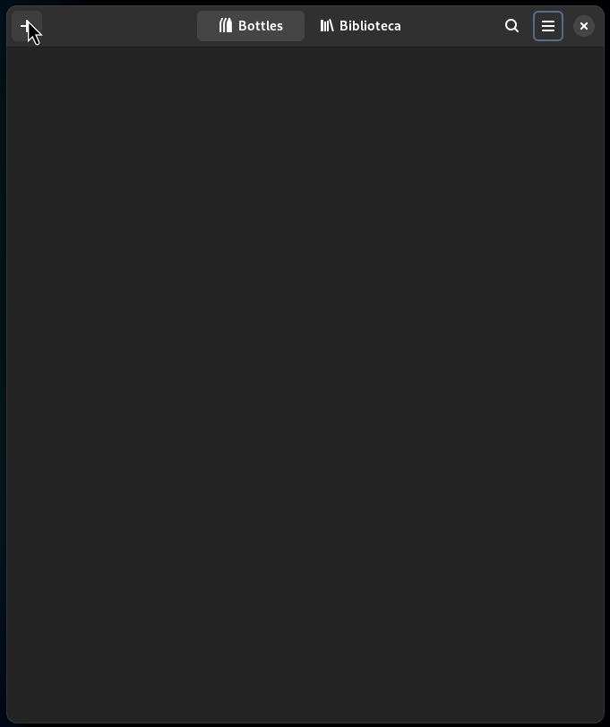Você pode então dar o nome para este ambiente, deixar uma configuração genérica para Aplicativos desktop, uma configuração genérica para jogos ou selecionar os componentes desejados. (Se você só vai instalar jogos, selecione o ambiente "Jogos" e configura o resto depois caso seja necessário).
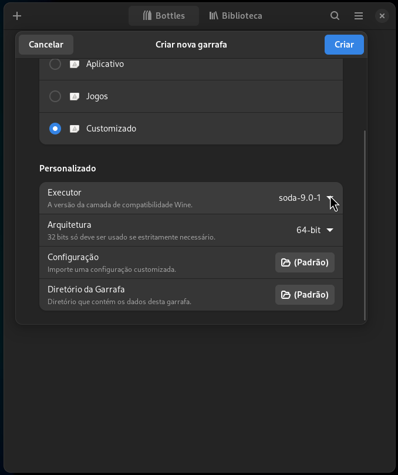Vamos supor que você queira instalar um launcher como o Ubisoft Connect, clique em Instalar Programas......
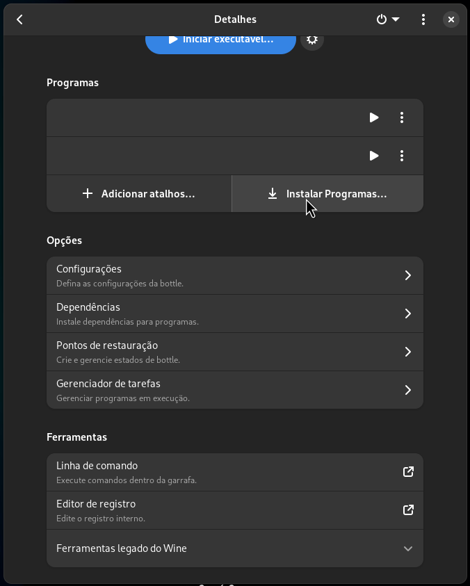Note que já existe alguns scripts de instalação para os programas mais comuns.
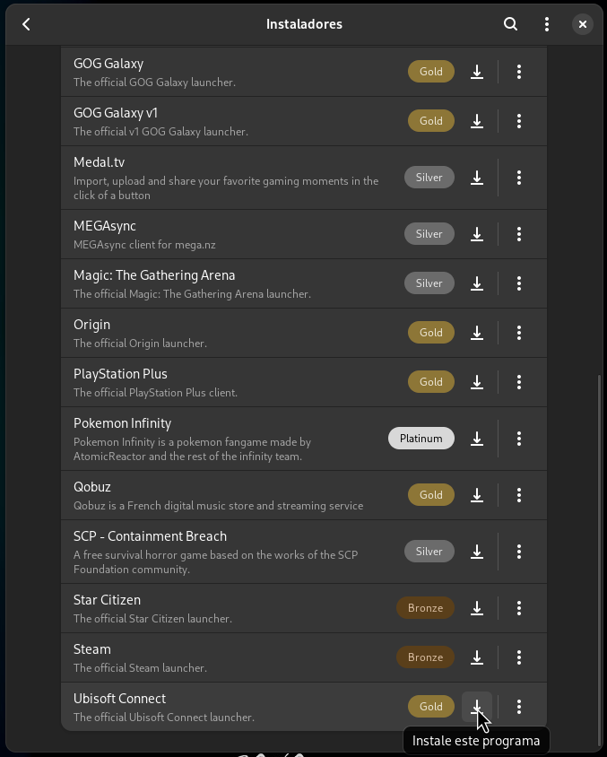Selecionando a opção Dependências você também pode instalar as dependências mais comuns.
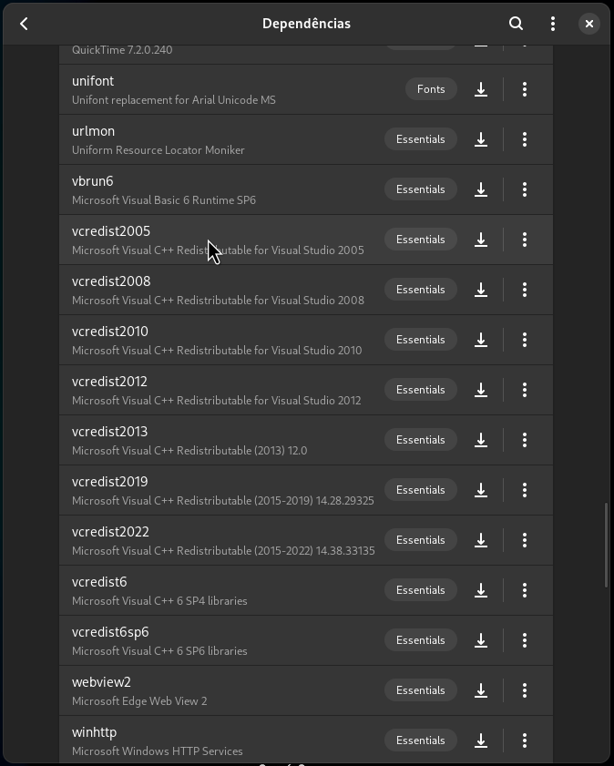Ao selecionar o menu Configurações você pode alterar o runner, a versão do DXVK, do VKD3D, ativar a opção de uso da placa de vídeo dedicada...
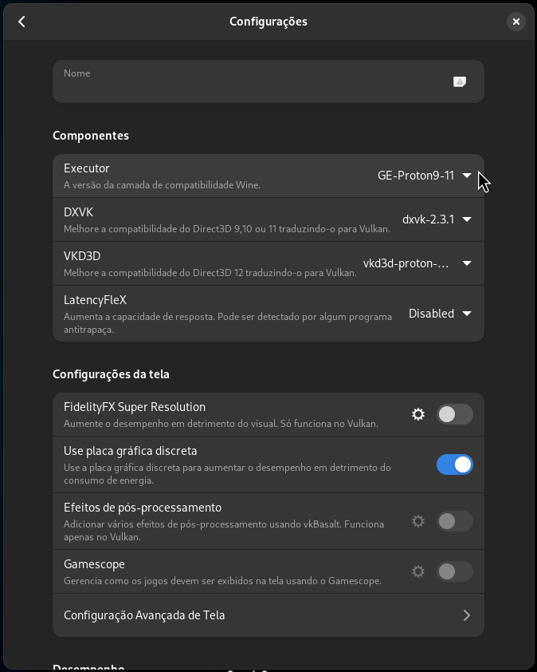Indo em Configurações > Gerenciar Unidades você pode dispor diretórios do seu sistema Linux como pontos de partida para discos do Wine, muito útil caso queira instalar os jogos em um diretório específico no seu pc.
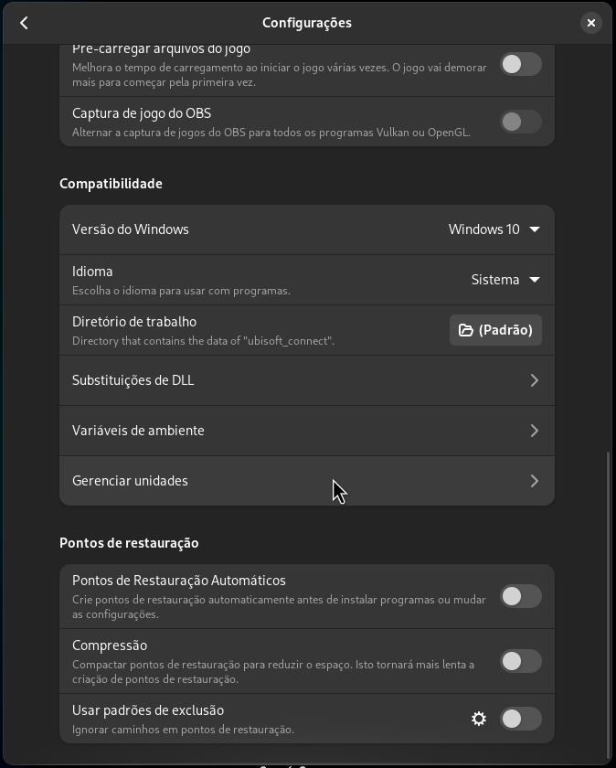O Bottles já dispõe de ferramentas de atualização de componentes...
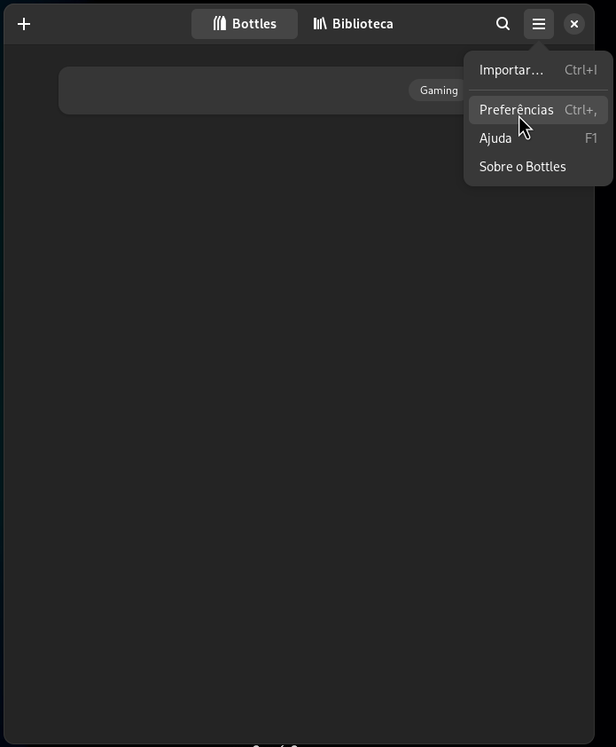E sim isso quer dizer que você pode atualizar tanto o Proton-GE quando o DXVK e VKD3D através do próprio Bottles.
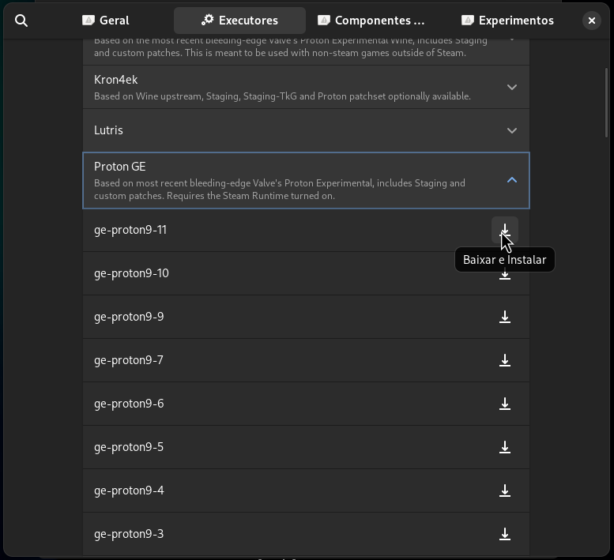Iniciando aplicativos de uma garrafa através de atalhos feitos a mão.
O Bottles tem a capacidade de criar atalhos na sua área de trabalho (se ele tiver as devidas permissões para isso), mas vamos supor que você tenha criado uma garrafa com o nome ubisoft_connect e nela você tenha adicionado o atalho para o XDefiant e queira iniciá-lo diretamente, e caso clique com o botão direito em cima desse ícone você vai direto para a janela de configuração do Bottles, para isso crie um arquivo com o nome de XDefiant.desktop em ~/.local/share/applications/ com o conteúdo conforme o exemplo abaixo:
[Desktop Entry]
Name=XDefiant
Exec=flatpak run --command=bottles-cli com.usebottles.bottles run -p 'XDefiant' -b 'ubisoft_connect'
Type=Application
Terminal=false
Categories=Game;
Icon=applications-games
Comment=Inicia XDefiant usando o Bottles.
Actions=Configure;
[Desktop Action Configure]
Name=Configurar no Bottles
Icon=com.usebottles.bottles
Exec=flatpak run --command=bottles-cli com.usebottles.bottles -b 'ubisoft_connect'
Como instalar a Steam?
Pelo fato da Valve ter adotado o Linux, na grande maioria das distribuições você vai encontrar um pacote nativo para a Steam na lojinha de aplicativos da sua distro, caso a sua distribuição não tenha um pacote nativo você pode instalar através do Flatpak com o comando:
flatpak install flathub com.valvesoftware.Steam
Pronto! Uma vez que a Steam está instalada, basta clicar com o botão direito no jogo que você quer, selecionar Propriedades..., depois Compatibilidade e marcar a caixa Usar ferramenta de compatibilidade e selecionar a versão desejada do Proton.
Quem caralhos é GloriousEggroll? Como instalar Proton-GE na Steam?
GloriousEggroll é o responsável pela distribuição Linux Nobara, uma distro feita para jogos que recebe inúmeras modificações e atualizações especificas para isso. Em diversos casos a sua versão específica do Proton (o ProtonGE) roda melhor que a da própria Steam! Para instalar a sua versão do Proton acesso o Github do GloriousEggroll através desse link aqui. Baixe a última versão do Proton-GE (arquivo GE-ProtonX-XX.tar.gz), extraia esse arquivo para pasta e coloque em /home/SEU_USER/.steam/root/compatibilitytools.d. Feche e abra novamente a Steam, a versão do ProtonGE vai ser visível no menu de seleção "Ferramenta de compatibilidade".
E para jogos da Amazon, Epic e GOG?
Para esses casos você pode usar o Heroic Games Launcher, na grande maioria das distribuições você vai encontrar um pacote nativo na lojinha de aplicativos da sua distro, caso a sua distribuição não tenha um pacote nativo você pode instalar através do Flatpak com o comando:
flatpak install flathub com.heroicgameslauncher.hgl
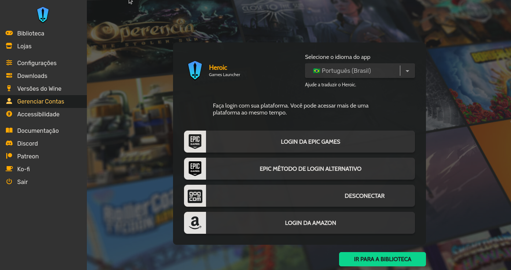
Uma vez que o Heroic está instalado basta ir em Gerenciar Contas e logar na loja que você deseja usar.
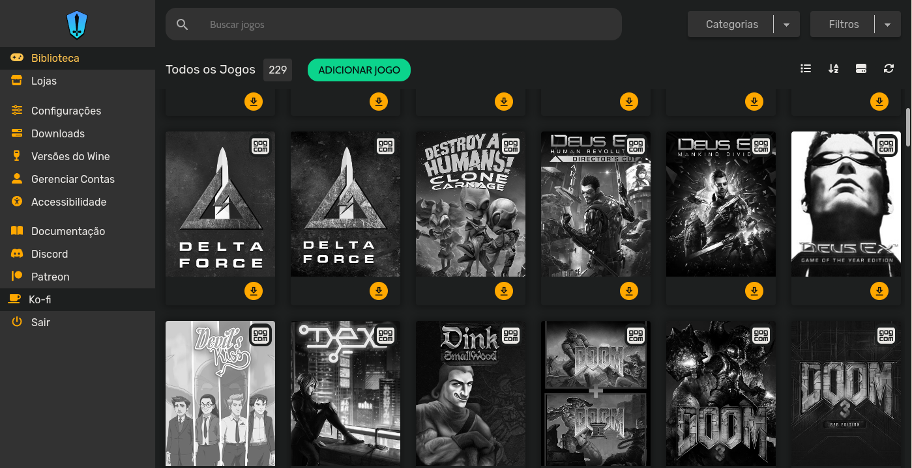Uma vez conectado toda a sua biblioteca será visível.
Mas o jogo (x que usa anticheat) não funciona!
Bom, hoje em dia o Linux já tem tudo o que é necessário para rodar jogos, sem contar que mesmo para o desenvolvedor de jogos para Windows pode fazer com que seu jogo rode no Linux hoje sem muita dor de cabeça, porém algumas ferramentas de anticheat mais intrusivas simplesmente não dão suporte ao Linux, para verificar o suporte de anticheat para a sua biblioteca você pode acessar Are we anticheat yet?.
Permissões do Flatpak
O Flakpak é baseado no conceito de sandboxing então nem todo aplicativo pode acessar todo diretório ou todo recurso (como internet, por exemplo), se você quiser uma configuração mais visual você pode instalar o Flatseal com o comando abaixo:
* Lembrando que caso você esteja usando o KDE você pode apenas instalar o pacote flatpak-kcm e ter a mesma funcionalidade, não sendo necessário a instalação do Flatseal.
flatpak install flathub com.github.tchx84.Flatseal
Mas se você (assim como eu) quiser fazer manualmente você pode editar diretamente os arquivos de override se tiver o id do aplicativo. Para listar os aplicativos flatpak instalados execute o comando:
flatpak list --app
Para criar um override precisamos do ID do aplicativo, que no caso do Bottles é com.usebottles.bottles. O recomendado é liberar as permissões a nível de usuário para cada aplicação, no caso seria o diretório ~/.local/share/flatpak/overrides/id_do_aplicativo (não é nada recomendado mas você também pode liberar a nível de sistema /var/lib/flatpak/overrides/id_do_aplicativo). Vamos supor que queremos permitir gravação e leitura ao diretório /mnt/HD/games para o Bottles, para isso crie o arquivo ~/.local/share/flatpak/overrides/com.usebottles.bottles e insira o conteúdo:
[Context]
filesystems=/mnt/HD/games:rw;
Para verificar os overrides existentes para o usuário basta usar o comando abaixo:
flatpak override --user --show com.usebottles.bottles
* remova o --user caso queira ver os overrides de sistema.
E para gravar as as gameplays?
Obviamente vai ser com o OBS Studio, mas se você tentou gravar direto ao menos uma vez deve ter quebrado a cara com a performance e qualidade do vídeo, que por padrão são péssimas no Linux! Mas a verdade é que ter uma gravação de baixa latência e qualidade de ponta é bem mais fácil do que parece.
Bom, a primeira coisa que precisamos é o OBS, que pode ser facilmente instalado via flatpak com o comando:
flatpak install flathub com.obsproject.Studio
Ok, uma vez que temos o OBS precisamos do OBS VAAPI, que vai criar a interface de captura, você pode instalar ele através do pacote:
flatpak install com.obsproject.Studio.Plugin.GstreamerVaapi
Se tiver usando Arch Linux com yay você pode usar o comando:
yay -S obs-vaapi
OU usar um pacote pré-compilado ou mesmo compilar na sua máquina visitando o OBS VAAPI no Github.
Por fim podemos instalar o OBS-VKCAPTURE, que pode ser facilmente instalado via flatpak com o comando:
flatpak install com.obsproject.Studio.Plugin.OBSVkCapture
Se tiver usando Arch Linux com yay você pode usar o comando:
yay -S obs-vkcapture-git lib32-obs-vkcapture-git
OU usar um pacote pré-compilado ou mesmo compilar na sua máquina visitando o OBS-VKCAPTURE no Github.
Configurando o OBS
Para utilizar a interface OBS-VKCAPTURE nova abra o OBS e adicione a fonte Captura de Jogo, você não precisa selecionar nenhuma janela específica, basta deixar marcado Capturar qualquer janela, você pode desmarcar a gravação do cursor se assim desejar.
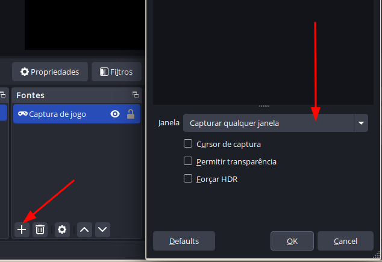Para utilizar a interface OBS-VAAPI nova abra o OBS, vá em Configurações > Saída > Modo de saída: Avançado > Gravação e em Encoder de vídeo: selecione uma das opções VAAPI AV1, VAAPI H.264, VAAPI H.265 conforme a compatibilidade da sua placa.
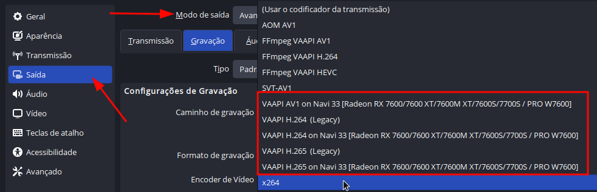Para apresentar o jogo como "capturável" para o OBS pasta adicionar o argumento abaixo nas opções de lançamento:
obs-gamecapture %command%
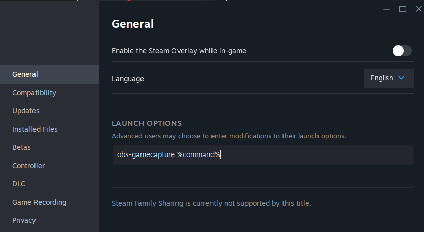
* Sim, a adição desse argumento também funciona no Heroic Game Launcher...
Você pode iniciar o jogo utilizando apenas a captura via Vulkan habilitada com o argumento:
env OBS_VKCAPTURE=1 %command%
Se você fez tudo certinho as chances são que você vai ter uma excelente qualidade de imagem com baixo uso de recursos e latência.
Mas eu quero ver meus FPS!

A ferramenta padrão para isso no Linux é o MangoHud, você pode instalar usando o comando:
flatpak install org.freedesktop.Platform.VulkanLayer.MangoHud
Caso queira habilitá-lo para todos os jogos da Steam você pode usar o comando:
flatpak override --user --env=MANGOHUD=1 com.valvesoftware.Steam
Caso queira iniciar o MangoHud na execução do jogo basta adicionar MANGOHUD=1 %command% na linha de argumentos do jogos.
Para ver as opções de configuração da sua HUD você pode ver as variáveis através deste link.